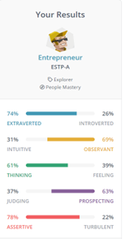

Name: Austin Nelson
Student Number: S3949489
I was born and raised in the Western suburbs of Melbourne, Victoria. I am half Australian and half Dutch with some family still living in the Netherlands however I unfortunately don’t speak any Dutch. I graduated High School from Footscray City College in 2021 which means I had the pleasure of doing year 11 and 12 in lockdown. I have many hobbies including playing basketball and djing. I also have a dog named Maggie who is a cross between a border collie and a blue heeler.
I have been interested with technology since I was a child. I’ve always been a big gamer enjoying games from my childhood such as Halo and Rachet and Clank. This eventually turned into a passion to become a game developer however my interest nowadays is more related to cyber security and AI. My mum has also been an inspiration when it comes to my passion with technology as she works in IT for Microsoft and is always talking about how much she enjoys it. I also would love to travel the world and I believe that a career in IT would allow me to be able to work in many different countries around the world.
I chose to study at RMIT originally to study business right after I graduated High School. I choose RMIT because it was a convenient location to where I live, and I had also heard good things from many of my friends that attend the University. After a semester of studying business, I realised that I am much more interested in the technology side of business than the actual business side. So I decided to make the switch and start studying a Bachelor of Information Technology.
<During my study I expect to learn quite a bit. I expect to learn how to learn. This sounds funny but I believe that this is a very important skill especially when working in IT. This is because IT is constantly changing and at all stages of my career, I’m going to have to learn new things all the time. Sure, during my studies learning the basics of current programs and systems will be useful but having the base knowledge of how these systems work and the ability to take this prior knowledge when learning a new program or system will be highly beneficial in my professional career.
This is a screenshot of the job listing just incase the link to the post is no longer available.

The position as a cyber security analysist involves all aspects of keeping the company secure digitally. This includes creating and carrying out various tests and assessments in order to gauge if the company has had any breaches and is secure or not, analysing security breaches in order to build up better defences and maintaining and updating cyber security systems. This position is interesting to me because I enjoy the changing landscape of IT and cyber security is one of those areas that are always changing. I feel that this job would be rewarding to me because there is always something new to learn, create or update in order to keep the company secure which keeps things fresh and interesting to me.
<Knowledge and understanding of appropriate regulatory compliances and IT Security frameworks. The examples given on the job advertisement include IS027000, COBIT, NIST 800. The IS027000 is a certification that whereas COBIT which stands for Control Objectives for Information and related Technologies is a framework that needs to be understood. This position also requires a certification in CISSP and/or CISM. CISSP stands for Specific Business Understanding Certified Information Systems Security Professional. To even qualify to take the exam for CISSP I would have had to have had at least 5 years paid experience in the relevant field. This shows that this position is not exactly for graduates and shows that the company is looking for experienced workers
<Currently I would be unable to work at this position as I do not have any of the relevant qualifications and certificates as some of them require a few years’ experience. I am currently studying a Bachelor of Information Systems so I will have a bachelor’s degree upon completion. Currently however, I have no formal qualifications, experience or certificates in this field. To get the CISSP I will need paid IT experience. I plan to do this through a traineeship program from Microsoft. This will help me get my foot in the door in the world of IT and allow me to build up my skills post University. This traineeship can also help with getting other certificates.
These are the results of an online Myers-Briggs test Personality type: Entrepreneur. ESTP-A
\  <These are the results of an online learning style test.
 <
<These are the results from an online Big 5 Personality Test. Each section of the Big 5 Personality Test is ranked from 0 to 100
Openness 65
Conscientiousness 60
Extraversion 85
.Agreeableness 62.5
Neuroticism 27
<The results of these tests show me that I’m quite extraverted which I would agree with. Unfortunately, I also agree with some parts that I hate to admit such as being unorganised and spontaneous. I found it interesting that the learning style test showed that I am a visual learner and might incorporate this into the way I study.
<I think these results will positively influence my behaviour in a team as being in a team involves communication and compromises which I am good at. I will be able to allow group member to express their ideas and views and try to incorporate a solution where everyone is happy even though this may come with compromises. Taking some of these results into account I will make sure that I am more organised and stick to a timeframe as I will have other people relying on me. I will create a structure for myself once group responsibilities are set out so that I can easily stick to deadlines and not hold anyone else up in the group because I haven’t completed something.
My project idea is to create a website/application that acts as a DJ and other electronic music producer’s toolkit for all their artist needs. This will be a space where DJs and producers can post photos and videos to share with fans, post new music that fans can download, post mixes, set up release calendars that fans can follow and post upcoming events and where to get tickets for said events. This will cover any DJ and producers needs expect for streaming songs as there are already many popular platforms for this.
DJs and electronic music producers have it tough when it comes to generating an active fanbase and get their releases out there as most things that these artists need to do are spread across multiple websites and apps. This significantly diminishes the amount of exposure an artist receives as they must maintain their fanbase on multiple platforms. For example, to sell music to fans many artists use Bandcamp, to post mixes they use SoundCloud, to generate hype for upcoming events they use Instagram and to promote their upcoming shows and sell tickets they use apps such as Bandsintown. This is all very inconvenient to an artist so an application/website that combines where all these apps excel but maintain a focus on DJs and electronic music producers will draw in many users and fans worldwide.
The plan for this website/application is to have all the tools that a DJ or producer would need to create and maintain a fanbase all in one place. There would be two different types of accounts that a user could have, one is an artist account and the other is a fan account. An artist account would have to be verified by having the artist post proof of their work, no matter how popular or unpopular they are. The artist account would be a paid monthly subscription to cover thew projects spending on copyright licensing and to make a profit
This project would be separated into three different sections. Artist’s feed, artists store and the events section.
The feed is where artists can post whatever they feel. They can post photos and videos from previous events or post clips of an upcoming song that they are working on. Fans will be able to follow their favourite artists and keep up to date with what they are doing. Artists will also be able to post when they have a new release or new things such as merchandise available. (This ties into the store section of the project) New mixes from DJs will also appear on the artists feed so that fans are kept up to date with what their favourite DJs. This will also be a safe space for artists to post content as this project will make sure it has all its copyright licencing sorted out so that artists don’t have to fear that their hard work is going to be taken down. This feed will combine elements from existing applications such as Instagram, Soundcloud and Mixcloud to create a feed that shows not only a look into an artist’s life and projects but also has their music in the same place. To clarify this project will only allow mixes to be posted and not songs for steaming as there are many popular platforms with more users already available so I feel that this feature will be underutilised.
The artists store will consist of artists entire discography available for digital download for whatever price the artist sets as they will receive 100% of the profits to their music. You may be thinking, who still downloads music when everyone these days has access to streaming services? Well, the answer is DJs and producers. They need to download music all the time. The idea of this project is to make a one stop shop for DJs, producers and their fans This is also where they will be able to list merchandise such are clothing or vinyl records for fans to purchase. The store section of this project will be its own section however can also be accessed through an artist’s profile if a fan finds a new artist.
The events section will again be its own section within the website/application however cans still be accessed through an artist’s profile. It will show all the events the artist has booked in the future displayed on a calendar with all the relevant information such as date, time and location. This is great for artists who travel internationally as fans will be able to create their own calendar of events that they plan to go to when their favourite artists come to their city. Think of this as a sort of wish list for gigs that fans want to attend. This is also where links to buy tickets for events will be posted so that it is convenient for fans to make a purchase. Not only this but tickets will also be conveniently kept in the section of the website/application so that they can be viewed at any time. Sort of like how apple wallet can hold tickets for you.
To keep a large-scale website/application running servers will be needed. This means constant maintenance and updating of servers. To develop an app for iOS and android software such as android studio for android development and software such as XCode for iOS development. A point of service (POS) system would also e required for the store component of this project. This would also mean that some sort of security system would need to be in place to protect customers banking information. An example of a sort of security system would be something like Captcha to make sure that people logging into the site are real people and not bots or anything else that may be suspicious. A good way to users accounts secure would be to have a two-factor authentication system. This means that a bot would have to be created that can send emails to users with an authentication code when they want to log in.
As mentioned earlier a website and application for both iOS and android will have to be developed. This means the skills required would be a solid understanding of HTML and CSS for developing a user-friendly website. A programming language would need to be used to develop a bot for two factor authentication. This could be created with knowledge of something like python. Knowledge of server’s work and how to maintain a growing number of users would also be needed. All these skills are very attainable and realistic. It may take time to develop these systems and applications, however. The most expensive part will be paying for servers or cloud computing depending on which one is more suitable.
The aim of this project is to help artists grow and maintain their audience by having all their online music distribution, adverting and events all in one place. If this project is successful artists will no longer have to waste time posting the same thing on multiple platforms to make sure all their audience is kept up to date. If this project is successful artists will have more control over the distribution of their content than before allowing them to spend more time creating instead of maintaining a social media presence.